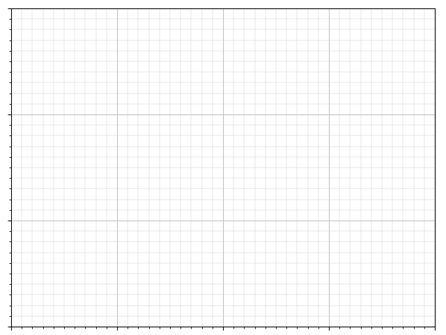

Note
Go to the end to download the full example code
Grid¶
Displaying a grid on the axes in matploblib.
import matplotlib.pyplot as plt
ax = plt.axes([0.025, 0.025, 0.95, 0.95])
ax.set_xlim(0, 4)
ax.set_ylim(0, 3)
ax.xaxis.set_major_locator(plt.MultipleLocator(1.0))
ax.xaxis.set_minor_locator(plt.MultipleLocator(0.1))
ax.yaxis.set_major_locator(plt.MultipleLocator(1.0))
ax.yaxis.set_minor_locator(plt.MultipleLocator(0.1))
ax.grid(which="major", axis="x", linewidth=0.75, linestyle="-", color="0.75")
ax.grid(which="minor", axis="x", linewidth=0.25, linestyle="-", color="0.75")
ax.grid(which="major", axis="y", linewidth=0.75, linestyle="-", color="0.75")
ax.grid(which="minor", axis="y", linewidth=0.25, linestyle="-", color="0.75")
ax.set_xticklabels([])
ax.set_yticklabels([])
plt.show()
Total running time of the script: (0 minutes 0.088 seconds)